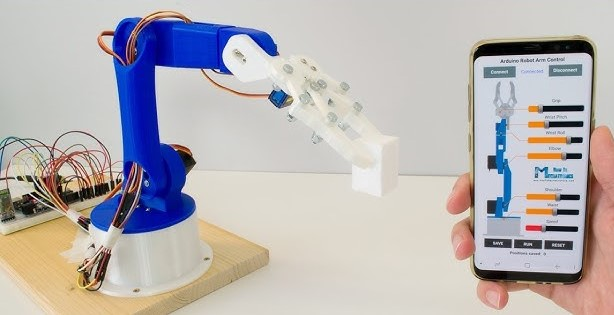
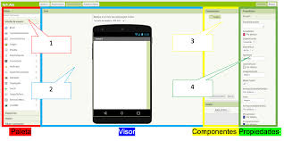
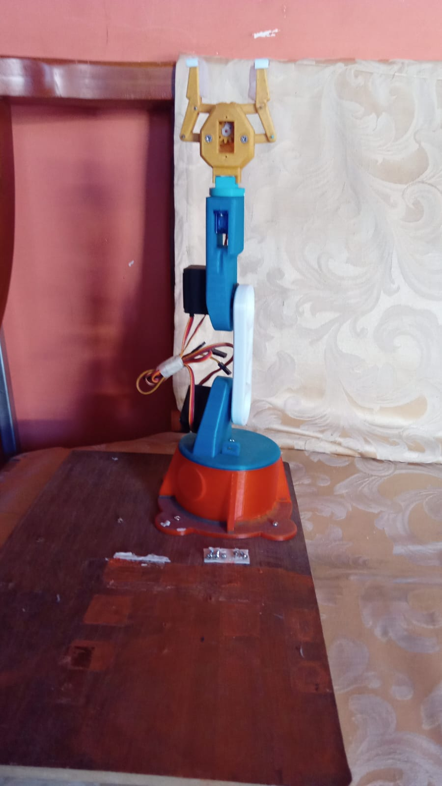

Objetivos del Proyecto
Desarrollar un brazo robótico recolector de basura, utilizando la placa SP32-CAM el cual será controlado por Bluetooth,
para optimizar la recolección y depósito de residuos, considerando aspectos técnicos, estadísticos y de emprendimiento.

Objetivos Especificos del Proyecto
1. Desarrollar un algoritmo de control para los actuadores del brazo robótico:
Implementar un sistema de control de movimiento preciso y eficiente para los actuadores.
Integrar el algoritmo de control con la placa SP32-CAM para una operación sincronizada.
2. Implementar una interfaz de usuario para la interacción con el brazo robótico:
Diseñar una aplicación móvil o de escritorio que permita controlar el brazo robótico a través de Bluetooth.

Detalles del Proyecto
Diseño y desarrollo de un brazo robótico:
- Mecanismo articulado con actuadores controlados para la manipulación de residuos.
- Integración de sensores para la detección y clasificación de objetos.
Placa SP32-CAM como controlador principal:
- Procesamiento de datos sensoriales y control de actuadores.
- Comunicación Bluetooth para la interacción con el usuario y la monitorización del sistema.
Optimización de la recolección de residuos:
- Aplicación de técnicas probabilísticas y estadísticas para la identificación y clasificación de objetos.
- Estimación del peso de los objetos recolectados mediante herramientas estadísticas.
- Generación de tablas estadísticas que muestren los objetos más pesados.
Consideraciones de emprendimiento:
- Análisis del costo de los objetos recolectados para evaluar la viabilidad del negocio.
- Estudio de mercado para identificar oportunidades y clientes potenciales.
- Exploración de posibles alianzas estratégicas para ampliar el alcance del proyecto.


 ( +593 989350952 )
( +593 989350952 )